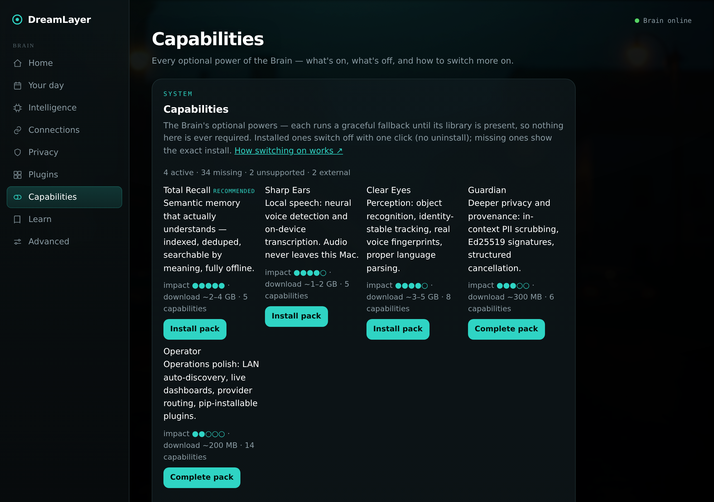

Integrations and capabilities
Fifty-eight open-source libraries are now wired into DreamLayer as
optional adapters — vector databases, local Whisper, spaCy, facial
action-unit models, neural VAD, Skia rendering, FastAPI, offline
translation, and more — without adding a single required dependency. The
core runs identically with nothing installed; each adapter upgrades one
seam when its library is present and falls back to the built-in behavior
when it is not. docs/INTEGRATIONS.md is the full before/after table;
this chapter explains the system and the switch-on story.
The pattern: add-alongside, try-import, fall back
There is deliberately no central registry to consult and no second gating
mechanism. Each adapter is a sibling file that tries its import, exposes
available, and degrades to the pre-existing built-in:
memory/vector_store.py— withsqlite-vec, indexed on-disk vector recall; without it, the exact linear cosine scan the retriever always did.orchestrator/asr_faster_whisper.py— withfaster-whisper, real local speech-to-text; without it, the ASR seam stays a seam.truth_lens/au_backends.py— with LibreFace or py-feat, real facial action-unit detection feeding the Truth Lens face channel; without it, the AU frame passes through untouched.ai_brain/server_fastapi.py— with FastAPI, an async ASGI mirror of the same handlers; without it, the stdlib server, unchanged.
The invariant the whole system rests on, enforced in CI: the suite stays green with zero optional dependencies installed.
Highlights of the catalog
By group (each entry: installed / absent): memory — sqlite-vec, chromadb, lancedb, usearch (ANN recall / linear scan), sentence-transformers (real local embeddings / mock), mem0 (dedup and decay — live today with a built-in fallback), networkx (graph algorithms / hand-rolled adjacency); voice — silero-vad (neural VAD / energy threshold), faster-whisper (local STT / none), whisperX (word timing / none); intelligence — spaCy (real NER for commitments / regex), speechbrain ECAPA (real speaker embeddings / hash), river (online per-user learning), dowhy (causal fusion / fixed weights), diart (live diarization / none), supervision (identity-stable tracking / nearest-centroid); vision — CLIP, ultralytics, moondream, coremltools (four real classifiers behind the object-recognizer seam); privacy — presidio (ML PII detection over an always-on regex redactor), pydantic (the Veil as a type invariant: a veiled memory cannot even be constructed — live today), cryptography (Ed25519 figment signatures / HMAC); infra — rich, watchdog, zeroconf (LAN auto-discovery — baked into the Mac app), datasette, rerun; platform — pluggy, pyee, argostranslate (offline translation / text unchanged), skia-python (GPU-crisp HUD rasterizing / PIL), fastapi, exo (cluster inference), MLX (overnight LoRA on Apple silicon), frame-sdk (a Brilliant Frame display adapter — the second device), and more.
A handful are live with no install at all: the PII regex redactor, the Veil type invariant, answer validation, the pairing rate-limiter, the presence ledger, and mem0-style dedup all run in their fallback forms today.
Knowing what is on: the capability report
capabilities.py is read-only introspection over the catalog — 42 named
capabilities spanning the 58 wired libraries (a capability like local ASR
bundles more than one library) — it probes
what is importable without executing anything, honors DL_DISABLE_<KEY>
kill-switch env vars, and reports each capability as active / off /
missing / unsupported / external:
python -m dreamlayer.capabilities # the per-machine report
python -m dreamlayer.capabilities --json # for tooling
python -m dreamlayer.capabilities --probe # also ping Ollama / exo
The same report is an endpoint (GET /dreamlayer/capabilities) and a whole
view in the Mac app, where each row carries a live status dot, an impact
rating, and either a one-click Turn on / Turn off (persisted as
disabled_caps, the config twin of the env vars) or a copyable
pip install "dreamlayer[extra]":

Deployment profiles
Four named installs compose the groups per machine
(pip install -e ".[profile-mac]"):
| Profile | For | Groups |
|---|---|---|
profile-halo |
the box next to the glasses | hardware only |
profile-phone |
the hub | memory, voice, structured, llm |
profile-mac |
the full Brain | everything |
profile-cloud |
a headless helper | structured, llm, intelligence, causal, privacy |
docs/DEPLOYMENT.md is the operator guide. A test pins the profiles and
extras in pyproject.toml to the capability catalog so they cannot drift.
Capability packs — the human-sized handle
Nobody installs 58 libraries one at a time, so the Mac app offers five curated packs, each with an honest download size and an impact rating, installed with one click on a source-run Brain (the sealed .dmg app cannot pip-install into itself, and says so):
| Pack | What it buys | Size | Impact |
|---|---|---|---|
| Total Recall | semantic memory — indexed, deduped, searchable by meaning, offline | ~2-4 GB | 5/5, recommended |
| Sharp Ears | local speech-to-text, neural VAD, word timing | ~1-2 GB | 4/5 |
| Clear Eyes | real vision classifiers, tracking, AU detection | ~3-5 GB | 4/5 |
| Guardian | ML PII detection, Ed25519 signing, typed pipelines | ~300 MB | 3/5 |
| Operator | dashboards, watchers, discovery, provider routing | ~200 MB | 2/5 |
A first-run nudge on the Home view points new Brains at Total Recall; pack installs run in the background and the view polls until the capabilities flip active.